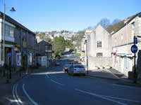
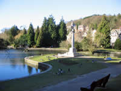
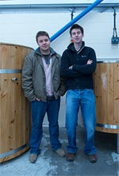

Grange-over-Sands Tourist Information

{kind=link}
 |
 |
 |
{kind=link}
By rail: From the West Coast Main Line, change at Carnforth for Grange-over-Sands.
By road: It is reached by the J36 exit of the M6 and along the A590 to the Lindale by-pass roundabout. Here, bear left and follow the signs.
Attractions in Grange-over-Sands |
The climate
Regarded as the mildest in the north west of Cumbria and the Lake District.
The Promenade
A traffic free walk of almost one mile with splendid views of Morecambe Bay and beyond; carefully tended plants and rare trees; original cast iron benches on which to sit and pause. It is the venue for art and crafts exhibitions in the summer months and one of the tallest Christmas trees in Britain is illuminated during the Festive Season.
Hampsfell Hospice
Follow the signs along a public footpath for about 30 minutes to reach this “Shelter for Travellers” built in 1846. A Greek inscription above the entrance translates as “rosy fingered dawn”. You will be well rewarded by the views of Morecambe Bay and the fells of the Lake District from the top of the building.
Cross Bay Walk
This is a very popular activity in the summer months. The guided tour begins from nearby Arnside and lasts about 3 hours. Visitors are reminded that this is a dangerous area of quicksands and tides. Walks should only be undertaken under the supervision of a qualified guide.
Holker Hall and Gardens
Award winning gardens close to Grange. The Food Hall and Restaurant with menus of local produce are well recommended. Venue for a variety of events throughout the summer.
www.holker-hall.co.uk
Lakeland Motor Museum
A beautifully presented display in a courtyard setting in the grounds of Holker Hall. Features the Campbell Bluebird Exhibition plus classic cars, tractors, cycles and more.
www.lakelandmotormuseum.co.uk
Cartmel Priory
It’s only a short drive to the 12th C Priory in the historic village of Cartmel. The author, Simon Jenkins is reported to have said that it is the most beautiful church in the North West of England. It certainly is a Lake District treasure. It contains much of special interest including parts of the stained glass east windows, seats and benches from the 15th C. and the wonderful sculptures by Josephina de Vasconcellos.
www.cartmelpriory.org
Aquarium of the Lakes
The aquarium is next to the Lakeside landing stage at the southern end of Lake Windermere. Open daily.
www.aquariumofthelakes.co.uk
Lakeland Miniature Village
Miniature buildings of houses, farms, barns and bridges constructed from Coniston slate plus an Oriental Garden. Open daily. www.lakelandminiaturevillage.co.uk
Windermere Lake Cruises
All year round sailings on England’s largest lake and one of the main attractions of the Lake District and Cumbria. Operates daily from Lakeside, Ambleside and Bowness except Christmas Day.
www.windermere-lakecruises.co.uk
Grizedale Forest
Grizedale, in the heart of the Lake District is the complete day out. Walk in its waymarked paths; marvel at the celebrated Forest Sculptures; eat and rest in the picnic areas; take in the views from Carron Crag. For the more adventurous there’s the North Face Mountain Bike Trail, the Silurian Walking Trail and the exciting high wire experience on the Go Ape.
www.forestry.gov.uk
Food and Drink in Grange-over-Sands |
| Fell Brewery Fell Brewery is a new craft brewery based in South Cumbria. At Fell, we do things a little different and have some pretty firm ideas behind what drives us. From our base in rural Cumbria, we intend to bring our own brand of adventure and creativity to the UK beer market. We intend to make beers that provoke a reaction from the drinker and make them pause for a moment to consider the intricate succession of flavours they are presented with. We can't promise that all our beers will please everyone, but we can promise that none of them will merely pass you by with a polite smile. Find out more about our beers and how we brew them at our website: www.fellbrewery.co.uk Email: info@fellbrewery.co.uk Phone: 015395 58980 |
 |
| Ambercourt Chinese Restaurant Flooks Liesure Centre, Main Street. Phone: 015395 35830 |
Spice Merchant 100, Main Street Phone: 015395 33332 |
| La Marina Restaurant Italian dishes. Main Street Phone: 015395 34590 |
KB’s Bar, Lounge &Restaurant Kentsford Road. Phone: 015395 33322 |
Transportation in Grange-over-Sands |